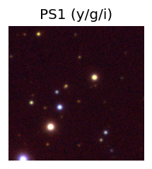
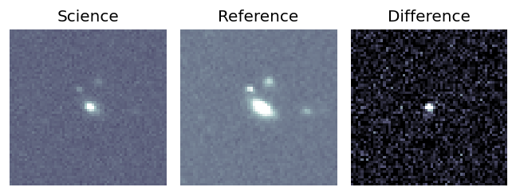
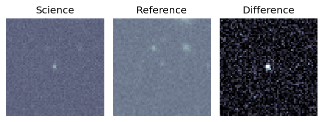
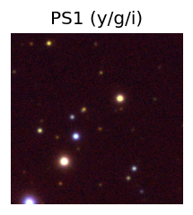
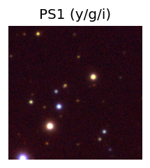

Candidate List 20250831 Previous Day Next Day Section 1: New Sources (age<1d) Cosmological Afterglow
Section 2: Old (1-5d) sources observed last night placeholder
Section 1: New Afterglow/FBOT Cands Last Night (3)
1. ZTF25abnjkui (FBOT?) [Back to Top] [Share] [Trigger Swift] [Fritz ] [Lasair ]RA, Dec: 81.23246, 65.49248 5h24m55.79s, 65d29m32.92sGalactic (l, b): 146.6062, 16.19082 ext(g-r) = 0.221PS1: 1 source in 3 arcsec Closest: d = 0.89 arcsec photoz=0.72+/-0.12 peak abs mag = -23.34
2. ZTF25abnmwof (FBOT?) [Back to Top] [Share] [Trigger Swift] [Fritz ] [Lasair ]RA, Dec: 291.35354, 37.54439 19h25m24.85s, 37d32m39.82sGalactic (l, b): 70.15561, 9.99926 ext(g-r) = 0.225peak abs mag = -21.20 PS1: 1 source in 3 arcsec Closest: d = 0.89 arcsec photoz=0.28+/-0.21 peak abs mag = -21.54
3. ZTF25abnngdd (FBOT?) [Back to Top] [Share] [Trigger Swift] [Fritz ] [Lasair ]RA, Dec: 310.83824, 8.2747 20h43m21.18s, 8d16m28.91sGalactic (l, b): 54.17791, -20.33822 ext(g-r) = 0.076peak abs mag = -23.58 LegacySurvey: 1 sources in 3 arcsec Closest: d = 0.14 arcsec, 100.6 deg (east of north) photoz=0.21 (68% bounds 0.1, 0.41), type=DEV peak abs mag = -19.86 (68% bounds -18.1, -21.51)
Section 2: Older Sources Observed Last Night (28)
0. ZTF25ablihfx (FBOT?) [Back to Top] [Share] [Trigger Swift] [Fritz ] [Lasair ]RA, Dec: 310.31072, -25.35347 20h41m14.57s, -25d-21m-12.48sGalactic (l, b): 19.526, -34.4728 ext(g-r) = 0.069PS1: 1 source in 3 arcsec Closest: d = 0.06 arcsec photoz=0.10+/-0.09 peak abs mag = -21.52
1. ZTF25abliibh (Afterglow?) [Back to Top] [Share] [Trigger Swift] [Fritz ] [Lasair ]RA, Dec: 329.88547, 51.30989 21h59m32.51s, 51d18m35.59sGalactic (l, b): 97.67529, -2.93136 ext(g-r) = 0.664
2. ZTF25ablygjh (Afterglow?) [Back to Top] [Share] [Trigger Swift] [Fritz ] [Lasair ]RA, Dec: 314.51406, 22.41953 20h58m3.37s, 22d25m10.30sGalactic (l, b): 68.40095, -14.94283 ext(g-r) = 0.136PS1: 1 source in 3 arcsec Closest: d = 5.07 arcsec photoz=0.10+/-0.01 peak abs mag = -19.44
3. ZTF25ablzevb (Afterglow?) [Back to Top] [Share] [Trigger Swift] [Fritz ] [Lasair ]RA, Dec: 323.38646, 37.06716 21h33m32.75s, 37d 4m1.79sGalactic (l, b): 84.80898, -10.75523 ext(g-r) = 0.237 PS1: 1 source in 3 arcsec Closest: d = 4.15 arcsec photoz=0.57+/-0.06 peak abs mag = -26.55
4. ZTF25ablzgzu (Afterglow?) [Back to Top] [Share] [Trigger Swift] [Fritz ] [Lasair ]RA, Dec: 330.97465, 36.74658 22h 3m53.92s, 36d44m47.70sGalactic (l, b): 89.3084, -14.95845 ext(g-r) = 0.16PS1: 1 source in 3 arcsec Closest: d = 0.41 arcsec photoz=0.04+/-0.00 peak abs mag = -17.63 Consistent with synchrotron, g-r>0!
5. ZTF25abmaapt (Afterglow?FBOT?) [Back to Top] [Share] [Trigger Swift] [Fritz ] [Lasair ]RA, Dec: 331.91421, 24.87607 22h 7m39.41s, 24d52m33.86sGalactic (l, b): 82.05235, -24.71195 ext(g-r) = 0.082peak abs mag = -22.39 LegacySurvey: 1 sources in 3 arcsec Closest: d = 0.22 arcsec, 107.1 deg (east of north) photoz=0.17 (68% bounds 0.14, 0.21), type=REX peak abs mag = -19.57 (68% bounds -19.02, -20.08)
6. ZTF25abmagez (Afterglow?) [Back to Top] [Share] [Trigger Swift] [Fritz ] [Lasair ]RA, Dec: 291.1544, -3.26392 19h24m37.06s, -3d-15m-50.10sGalactic (l, b): 33.80212, -8.86753 ext(g-r) = 0.597
7. ZTF25abmalbi (Afterglow?FBOT?) [Back to Top] [Share] [Trigger Swift] [Fritz ] [Lasair ]RA, Dec: 29.30969, 35.03725 1h57m14.32s, 35d 2m14.12sGalactic (l, b): 137.87107, -25.91839 ext(g-r) = 0.079PS1: 1 source in 3 arcsec Closest: d = 0.36 arcsec photoz=0.10+/-0.01 peak abs mag = -19.57
8. ZTF25abmniua (Afterglow?) [Back to Top] [Share] [Trigger Swift] [Fritz ] [Lasair ]RA, Dec: 34.87195, 78.78076 2h19m29.27s, 78d46m50.73sGalactic (l, b): 127.29753, 16.66249 ext(g-r) = 0.391
9. ZTF25abmqoou (FBOT?) [Back to Top] [Share] [Trigger Swift] [Fritz ] [Lasair ]RA, Dec: 239.45301, 29.16042 15h57m48.72s, 29d 9m37.50sGalactic (l, b): 47.08898, 49.13405 ext(g-r) = 0.039peak abs mag = -20.30 LegacySurvey: 1 sources in 3 arcsec Closest: d = 0.52 arcsec, 229.3 deg (east of north) photoz=0.44 (68% bounds 0.08, 0.9), type=REX peak abs mag = -21.4 (68% bounds -17.24, -23.26)
10. ZTF25abmraup (Afterglow?) [Back to Top] [Share] [Trigger Swift] [Fritz ] [Lasair ]RA, Dec: 297.33666, 14.43777 19h49m20.80s, 14d26m15.98sGalactic (l, b): 52.44532, -5.84144 ext(g-r) = 0.265
11. ZTF25abmrjnm (Afterglow?) [Back to Top] [Share] [Trigger Swift] [Fritz ] [Lasair ]RA, Dec: 291.563, 4.26888 19h26m15.12s, 4d16m7.96sGalactic (l, b): 40.73346, -5.75983 ext(g-r) = 0.59PS1: 1 source in 3 arcsec Closest: d = 2.92 arcsec photoz=0.42+/-0.00 peak abs mag = -24.60
12. ZTF25abmrxev (Afterglow?) [Back to Top] [Share] [Trigger Swift] [Fritz ] [Lasair ]RA, Dec: 308.15158, 20.59315 20h32m36.38s, 20d35m35.35sGalactic (l, b): 63.27334, -11.27704 ext(g-r) = 0.122PS1: 1 source in 3 arcsec Closest: d = 6.63 arcsec photoz=1.22+/-0.10 peak abs mag = -27.65
13. ZTF25abmtkav (FBOT?) [Back to Top] [Share] [Trigger Swift] [Fritz ] [Lasair ]RA, Dec: 345.43255, 5.36993 23h 1m43.81s, 5d22m11.73sGalactic (l, b): 79.60811, -48.05716 ext(g-r) = 0.073LegacySurvey: 1 sources in 3 arcsec Closest: d = 1.16 arcsec, 129.7 deg (east of north) photoz=0.23 (68% bounds 0.18, 0.36), type=EXP peak abs mag = -20.85 (68% bounds -20.26, -22.02) Consistent with synchrotron, g-r>0!
14. ZTF25abmuaub (FBOT?) [Back to Top] [Share] [Trigger Swift] [Fritz ] [Lasair ]RA, Dec: 323.19819, 27.87127 21h32m47.57s, 27d52m16.57sGalactic (l, b): 78.06626, -17.22354 ext(g-r) = 0.167peak abs mag = -19.54 Consistent with synchrotron, g-r>0!
15. ZTF25abmurpc (FBOT?) [Back to Top] [Share] [Trigger Swift] [Fritz ] [Lasair ]RA, Dec: 333.62982, 40.81049 22h14m31.16s, 40d48m37.78sGalactic (l, b): 93.51732, -12.931 ext(g-r) = 0.158peak abs mag = -20.05 PS1: 1 source in 3 arcsec Closest: d = 0.15 arcsec photoz=0.09+/-0.16 peak abs mag = -18.38 Consistent with synchrotron, g-r>0!
16. ZTF25abmvvxh (FBOT?) [Back to Top] [Share] [Trigger Swift] [Fritz ] [Lasair ]RA, Dec: 358.79747, 26.45003 23h55m11.39s, 26d27m0.12sGalactic (l, b): 107.58131, -34.73946 ext(g-r) = 0.045peak abs mag = -20.43 LegacySurvey: 1 sources in 3 arcsec Closest: d = 0.09 arcsec, 176.3 deg (east of north) photoz=0.18 (68% bounds 0.16, 0.2), type=SER peak abs mag = -19.85 (68% bounds -19.52, -20.13)
17. ZTF25abmwpse (FBOT?) [Back to Top] [Share] [Trigger Swift] [Fritz ] [Lasair ]RA, Dec: 19.24658, 9.43651 1h16m59.18s, 9d26m11.45sGalactic (l, b): 133.41745, -52.91431 WARNING: 1.21 deg from ecliptic plane ext(g-r) = 0.037peak abs mag = -20.35 LegacySurvey: 1 sources in 3 arcsec Closest: d = 2.16 arcsec, 357.6 deg (east of north) photoz=0.09 (68% bounds 0.07, 0.16), type=EXP peak abs mag = -18.6 (68% bounds -17.85, -19.87) Consistent with synchrotron, g-r>0!
18. ZTF25abmwpui (FBOT?) [Back to Top] [Share] [Trigger Swift] [Fritz ] [Lasair ]RA, Dec: 5.85705, -1.86118 0h23m25.69s, -1d-51m-40.26sGalactic (l, b): 106.87843, -63.85647 WARNING: -4.04 deg from ecliptic plane ext(g-r) = 0.047peak abs mag = -19.81 LegacySurvey: 1 sources in 3 arcsec Closest: d = 0.34 arcsec, 155.9 deg (east of north) photoz=0.09 (68% bounds 0.06, 0.13), type=SER peak abs mag = -18.4 (68% bounds -17.67, -19.24) Consistent with synchrotron, g-r>0!
19. ZTF25abmwpvt (FBOT?) [Back to Top] [Share] [Trigger Swift] [Fritz ] [Lasair ]RA, Dec: 9.11516, -25.92292 0h36m27.64s, -25d-55m-22.50sGalactic (l, b): 51.87657, -86.43981 ext(g-r) = 0.014LegacySurvey: 1 sources in 3 arcsec Closest: d = 0.74 arcsec, 263.0 deg (east of north) photoz=0.12 (68% bounds 0.11, 0.13), type=SER peak abs mag = -19.43 (68% bounds -19.22, -19.56)
20. ZTF25abmxqpn (FBOT?) [Back to Top] [Share] [Trigger Swift] [Fritz ] [Lasair ]RA, Dec: 15.29847, 0.36832 1h 1m11.63s, 0d22m5.96sGalactic (l, b): 128.20271, -62.40354 ext(g-r) = 0.03LegacySurvey: 1 sources in 3 arcsec Closest: d = 2.33 arcsec, 347.2 deg (east of north) photoz=0.26 (68% bounds 0.04, 1.18), type=EXP peak abs mag = -21.13 (68% bounds -16.79, -25.06)
21. ZTF25abmykxl (Afterglow?) [Back to Top] [Share] [Trigger Swift] [Fritz ] [Lasair ]RA, Dec: 5.29732, -2.93708 0h21m11.36s, -2d-56m-13.51sGalactic (l, b): 104.98693, -64.7497 WARNING: -4.8 deg from ecliptic plane ext(g-r) = 0.037LegacySurvey: 1 sources in 3 arcsec Closest: d = 4.50 arcsec, 53.0 deg (east of north) photoz=1.1 (68% bounds 0.81, 1.38), type=REX peak abs mag = -24.61 (68% bounds -23.8, -25.23)
22. ZTF25abnbyfj (Afterglow?) [Back to Top] [Share] [Trigger Swift] [Fritz ] [Lasair ]RA, Dec: 210.49405, 31.14012 14h 1m58.57s, 31d 8m24.43sGalactic (l, b): 51.73842, 74.10259 ext(g-r) = 0.014peak abs mag = -22.62 LegacySurvey: 1 sources in 3 arcsec Closest: d = 1.64 arcsec, 286.1 deg (east of north) photoz=1.06 (68% bounds 0.2, 1.7), type=PSF peak abs mag = -25.19 (68% bounds -20.85, -26.46)
23. ZTF25abnebvm (FBOT?) [Back to Top] [Share] [Trigger Swift] [Fritz ] [Lasair ]RA, Dec: 351.18306, 8.55055 23h24m43.93s, 8d33m2.00sGalactic (l, b): 89.40841, -48.59584 ext(g-r) = 0.074LegacySurvey: 1 sources in 3 arcsec Closest: d = 1.62 arcsec, 155.3 deg (east of north) photoz=0.24 (68% bounds 0.18, 0.36), type=EXP peak abs mag = -20.44 (68% bounds -19.68, -21.4) Consistent with synchrotron, g-r>0!
24. ZTF25abnhuij (FBOT?) [Back to Top] [Share] [Trigger Swift] [Fritz ] [Lasair ]RA, Dec: 29.67643, 3.71555 1h58m42.34s, 3d42m55.98sGalactic (l, b): 153.27355, -55.14359 ext(g-r) = 0.033peak abs mag = -21.83 LegacySurvey: 1 sources in 3 arcsec Closest: d = 1.28 arcsec, 178.0 deg (east of north) photoz=0.2 (68% bounds 0.17, 0.25), type=EXP peak abs mag = -19.86 (68% bounds -19.41, -20.36)
25. ZTF25abnpczz (FBOT?) [Back to Top] [Share] [Trigger Swift] [Fritz ] [Lasair ]RA, Dec: 347.24887, -18.57942 23h 8m59.73s, -18d-34m-45.92sGalactic (l, b): 47.46151, -64.95933 ext(g-r) = 0.036peak abs mag = -18.30 PS1: 1 source in 3 arcsec Closest: d = 0.87 arcsec photoz=0.16+/-0.06 peak abs mag = -19.64 Consistent with synchrotron, g-r>0!
26. ZTF25abnqvlt (FBOT?) [Back to Top] [Share] [Trigger Swift] [Fritz ] [Lasair ]RA, Dec: 6.28347, -4.19436 0h25m8.03s, -4d-11m-39.71sGalactic (l, b): 106.47614, -66.22212 ext(g-r) = 0.035peak abs mag = -18.20 LegacySurvey: 1 sources in 3 arcsec Closest: d = 2.16 arcsec, 125.4 deg (east of north) photoz=0.27 (68% bounds 0.19, 0.6), type=EXP peak abs mag = -20.43 (68% bounds -19.6, -22.46) Consistent with synchrotron, g-r>0!
27. ZTF25abnqwkl (FBOT?) [Back to Top] [Share] [Trigger Swift] [Fritz ] [Lasair ]RA, Dec: 11.24476, 9.399 0h44m58.74s, 9d23m56.39sGalactic (l, b): 120.25697, -53.4392 WARNING: 4.2 deg from ecliptic plane ext(g-r) = 0.068peak abs mag = -21.66 LegacySurvey: 1 sources in 3 arcsec Closest: d = 0.19 arcsec, 124.5 deg (east of north) photoz=0.28 (68% bounds 0.26, 0.3), type=SER peak abs mag = -20.71 (68% bounds -20.55, -20.87) 


 
